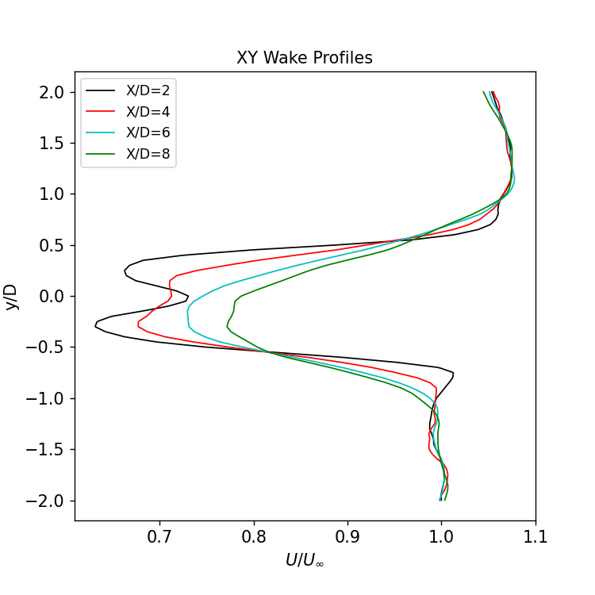

NREL5MW results
The results of the NREL5MW ALM simulation are shown here. Many of the scripts and notebooks used to create the results are documented in the postprocessing section, where we describe the settings and parameters used.
Contour visualizations
Instantaneous velocity contours of the domain and near the turbine are created using the InstantaneousAvgPlanes scripts. The horizontal velocity contours at the hub-height (z=90m) plane at 900 seconds after the start of the simulation are shown here:

Similarly, the instantaneous horizontal velocity flow near the turbine (at the hub-height z=90m plane) at 900 seconds after the start of the simulation is depicted in the image below. The turbine hub-height center sits at (x,y)=(0,0) in this coordinate system:

The same image in streamwise plane gives a view of the vertical structure in the wake.
Turbine results
The time-history and time-averaged turbine performance is extracted and calculated from the OpenFAST output in the OpenFAST_v40_Results scripts. In this case, we assume that a 300 second initialization period is sufficient for the initial transients to decay and for the far wake region develop. Averaged, 10-minute statistics from t=300s to t=900s are given in the table below
BldPitch1 |
RotSpeed |
RotThrust |
RotTorq |
GenPwr |
|---|---|---|---|---|
2.668 deg |
11.700 rpm |
564.884 kN |
3127.292 kN-m |
3653.283 kW |
The full time history of the turbine power, rotor thrust, rotor speed, blade pitch, and rotor torque are also shown here:
Blade loading profiles
The averaged blade loading profiles and aerodynamic properties as a function of the blade span are calculated in the OpenFAST_SectionalLoading scripts. These include the angle of attack (AOA), inflow angle (Phi), lift/drag (Cl/Cd), and streamwise/tangential force (Fx/Fy) loading profiles shown here:
Wake profile results
The time averaged wake profiles are calculated in the AVGPlanes script. Contours of the 10-minute averaged velocities, on both the hub-height and streamwise planes show the overall wake structure:
Profiles of the wake velocity, normalized against \(U_\infty\)=11.4 m/s, are extracted from x/D = 1, 2, 3,…,9:
